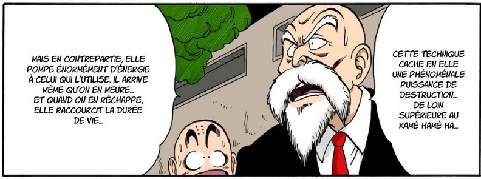
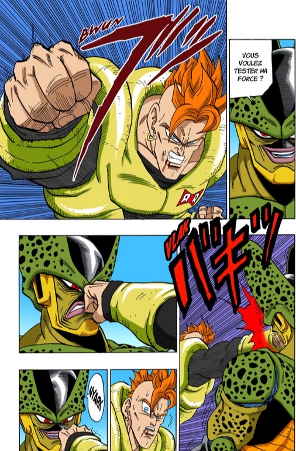
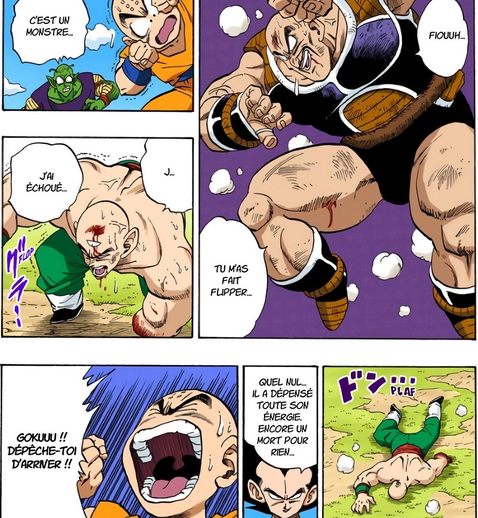
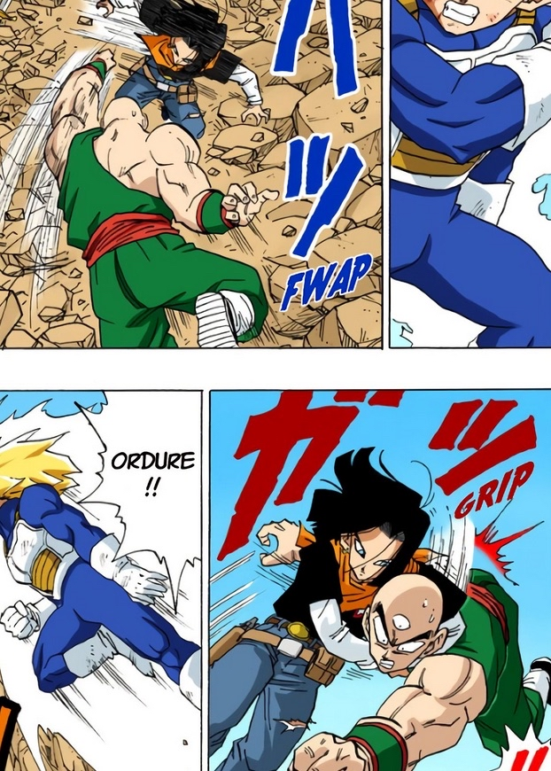
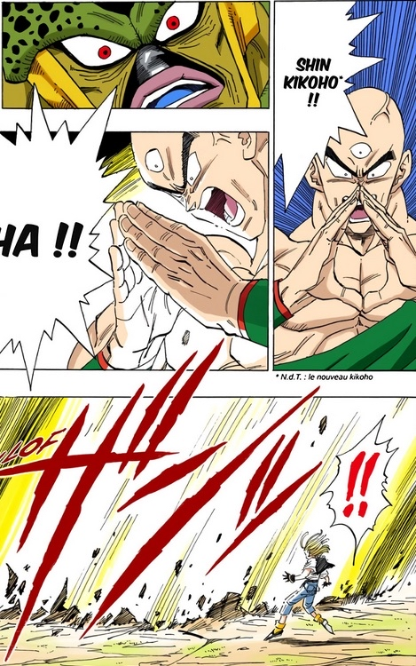
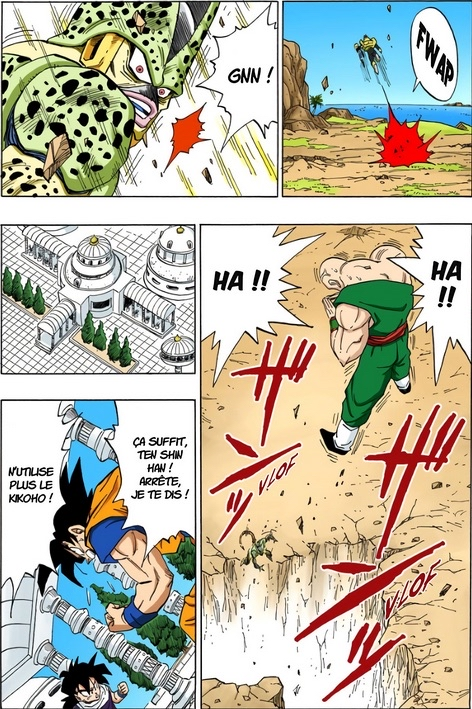

Sommaire de l’étude
Nous étions heureux de revoir notre cher Ten-chan jouer un rôle décisif. Face à Cell deuxième forme, Tenshinhan se dresse entre le monstre et les cyborgs. Il ne le vainc pas : il gagne du temps, au risque de sa propre vie. C’est un moment de bravoure mémorable.
Mais une scène peut être excellente sur le plan émotionnel et poser un véritable problème sur le plan de la cohérence narrative. C’est précisément cette distinction qui nous intéresse.
01. Boost magique ou nerf magique ?
Nous appelons ainsi un ajustement apparent et ponctuel des rapports de force, que les règles jusque-là établies par le récit ne semblent pas suffire à expliquer. Le terme « magique » désigne ici l’absence d’explication narrative satisfaisante, et non un mécanisme réellement magique dans l’univers.
Une performance inattendue
Un personnage semble soudain capable de faire ce que le récit ne nous avait pas préparés à le voir accomplir.
Une capacité qui disparaît
Son adversaire paraît ne plus pouvoir mobiliser les moyens d’action que nous lui connaissions.
Dans la scène du Shin Kikoho, il n’est pas nécessaire de déterminer si Tenshinhan a été boosté ou si Cell a été nerfé. C’est la relation entre les deux combattants qui pose question.
02. Avant de découvrir la scène
Pour comprendre ce que l’on reproche à une scène, il faut d’abord se replacer dans la position du lecteur qui ne l’a pas encore lue. Oublions un instant ce que nous savons de la suite. Qu’aurions-nous estimé possible au regard des rapports de force déjà établis ?
Le test de prédictibilité narrative ne consiste pas à exiger que le lecteur devine tous les événements. Un récit peut surprendre. Mais lorsqu’un événement paraît incompatible avec la grammaire que nous avons assimilée, il faut rechercher ce qui le rend possible dans le texte, plutôt que d’inventer une règle après coup.
03. N’oublions pas où se trouve notre cher Ten-chan
Tenshinhan s’est entraîné chez Kaio, puis pendant les trois années de préparation à l’arrivée des cyborgs. Il a progressé ; le manga ne chiffre toutefois pas son niveau à ce moment. Lui attribuer, par exemple, le niveau de Goku lors de son combat contre Vegeta sur Terre reste une estimation, non une donnée canonique.
Nous possédons un repère plus concret : sa confrontation avec C-17. L’extrait fourni montre C-17 prendre l’ascendant sur Tenshinhan et le saisir sans difficulté apparente. On n’a pas besoin d’imaginer une valeur de puissance pour comprendre le déséquilibre.
C-17 contre Tenshinhan. Le rapport de force de départ. Consulter les captures du dossier →
À partir de là, Toriyama nous fait franchir plusieurs paliers. Les Super Saiyans sont dépassés par les cyborgs. Piccolo assimile le Tout-Puissant et peut rivaliser avec C-17. Cell, après ses absorptions d’humains, surclasse Piccolo et C-17. C-16 intervient alors à un niveau comparable à celui de ce Cell renforcé. Enfin, l’absorption de C-17 permet à Cell de franchir un nouveau palier.
Retenons surtout l’essentiel : il n’existe pas un simple petit écart entre C-17 et Cell deuxième forme. Le récit insiste au contraire sur une succession de dépassements.
04. C-16, le témoin gênant
Lorsque Cell évolue, C-16 tente d’intervenir. Son attaque ne lui permet pas de maîtriser son adversaire. Le rapport de force vient de changer. Or, peu après, Tenshinhan parvient à empêcher Cell d’avancer en enchaînant ses Shin Kikoho.
C-16
Un combattant qui rivalisait avec Cell première forme échoue face à sa nouvelle forme.
Tenshinhan
Un combattant dominé par C-17 parvient à repousser Cell deuxième forme à répétition.
Une attaque physique et une projection d’énergie ne sont certes pas identiques. C’est justement pourquoi il faut examiner si le Shin Kikoho possède une propriété établie permettant d’expliquer cet écart de résultat.
Comparer l’échec de C-16 contre Cell deuxième forme et la séquence du Shin Kikoho. Consulter les captures du dossier →
05. Une technique spéciale, mais spéciale en quoi ?
Dans Dragon Ball, le Kikoho est présenté comme une technique particulièrement dangereuse pour celui qui l’utilise. Son coût et sa puissance destructrice ne sont pas en cause. Ce que nous interrogeons, c’est le mécanisme précis qui lui permettrait d’ignorer un écart de puissance aussi considérable.
Les personnages de Dragon Ball sont, pour reprendre une image, de véritables réacteurs nucléaires. Leur ki leur permet d’attaquer, de repousser, de se protéger et de libérer de l’énergie autour d’eux. Il ne suffit donc pas toujours de bloquer leurs membres pour neutraliser leurs moyens d’action.
Une technique peut évidemment posséder des propriétés particulières. Dans un autre système de combat, la puissance brute ne permettrait pas nécessairement de résister à une capacité qui obéit à ses propres règles. Mais ici, il faut établir cette propriété : le fait que le Shin Kikoho soit éprouvant ne démontre pas à lui seul qu’il multiplie le ki à la manière du Kaioken, ni qu’il neutralise indépendamment du niveau de son utilisateur.
06. Le paradoxe des 100 %
Supposons que l’efficacité du Shin Kikoho s’explique seulement par le fait que Tenshinhan mobilise toute sa puissance. Très bien. Mais que font alors Goku et Vegeta lorsqu’ils exécutent leurs attaques énergétiques à pleine puissance ?
Si Vegeta était, pour les besoins de l’expérience, quinze fois plus puissant que Tenshinhan, mobiliser 100 % de l’énergie disponible de ce dernier ne suffirait pas à égaler la puissance que Vegeta peut théoriquement mobiliser dans un modèle proportionnel.
Les deux barres partagent la même échelle. Aucun multiplicateur ni pourcentage n’est canonique. Le modèle suppose la proportionnalité entre puissance disponible et énergie projetée ; c’est l’hypothèse que l’argument des « 100 % » invite à tester, pas une loi physique démontrée du manga.
Faudrait-il alors supposer que le Kamehameha ou les attaques les plus puissantes des autres combattants n’exploitent qu’une fraction dérisoire de leur potentiel ? Ou que le Shin Kikoho dispose d’un multiplicateur exceptionnel ? Ces explications sont envisageables, mais demandent précisément ce qu’il nous manque : une justification dans le récit.
La scène ne démontre pas davantage que Goku ou Vegeta auraient échoué avec chacune de leurs techniques. Notre argument repose sur la hiérarchie narrative qui rend une telle performance surprenante, et non sur un combat qui n’a jamais été dessiné.
07. Toriyama coupe la poire en deux
Voici mon hypothèse : Toriyama voulait remettre Tenshinhan en lumière tout en préservant la supériorité de Cell. Il lui offre donc une intervention décisive sans que Cell subisse de dégâts significatifs. Le combattant est héroïque, l’antagoniste reste invaincu.
Ce compromis émotionnel est parfaitement compréhensible. Mais suffit-il à résoudre le problème des rapports de force ? Dans la grammaire de Dragon Ball, une projection de ki capable de contenir un adversaire largement supérieur devrait, selon cette lecture, avoir une efficacité comparable à celle d’autres attaques puissantes. La scène paraît dissocier la capacité de le repousser et celle de lui infliger des dégâts sans en établir clairement le mécanisme.
Il ne s’agit pas de prétendre connaître une loi universelle suivant laquelle repousser signifie nécessairement blesser. Il s’agit de demander ce qui, dans cette situation précise, permet à Tenshinhan de produire une contention qu’on n’attendrait pas de lui. La distinction entre recul, dégâts et puissance mérite d’être examinée dans les cases elles-mêmes.
Le compromis demeure une hypothèse sur la construction narrative, et non une déclaration attestée de Toriyama.
08. Ce qui choque certains lecteurs
Les réactions de fans qui découvrent ou revoient cette scène ne constituent pas des preuves de son incohérence. Elles témoignent d’un ressenti de lecture : certains y voient seulement une scène héroïque, d’autres sont surpris par la performance au regard des rapports de force.
▶ Vidéo 1 — réaction d’un fan (à partir de 0:37) ↗Lien fourni par l’auteur ; contenu non encore vérifié. Une deuxième vidéo sera ajoutée après réception.
Lorsqu’une scène nous choque, il peut nous manquer une information. Il peut aussi exister une tension dans la narration. Notre méthode consiste à relire les sources et à éprouver ces deux possibilités, sans considérer le ressenti comme une preuve et sans considérer toute surprise comme une erreur.
09. Une scène que nous aurions voulu pouvoir défendre
Nous aimons l’exploit de Tenshinhan. Nous aurions simplement aimé que Dragon Ball nous donne les moyens de comprendre pourquoi il peut l’accomplir.
Le problème n’est pas de faire briller un ancien rival de Goku. C’est de le faire briller au moyen d’une performance qui paraît contredire la grammaire de puissance que le récit vient de construire.
On peut aimer une scène sans être obligé de lui inventer une cohérence.
Les autres études du dossier
La sieste magique de Vegeta — Comment expliquer sa performance contre Freezer au regard du niveau auquel nous l’avions laissé ?
Mister Buu face à Kid Buu — Confronter sa prestation à celle contre Buu gris, dans la lecture des rapports de force défendue sur le site.
C-16 retient Cell parfait — Un autre cas de contention physique, à distinguer de l’échec face à Cell deuxième forme. Les deux scènes devront être confrontées à partir des planches exactes.
Études à venir. Les exemples ne sont pas encore des conclusions démontrées.
Les planches du dossier
Les treize captures fournies pour cette étude sont réunies ici, dans l’ordre de leurs noms de fichiers. Cliquez sur une planche pour l’ouvrir en grand. Les légendes analytiques et les renvois précis seront ajoutés après identification des cases.











Source principale : Dragon Ball, Akira Toriyama / Shueisha, manga original. Cet article reprend une discussion Discord et treize captures fournies par l’auteur ; leur identification, la pagination et l’infographie définitive sont à compléter avant publication éditoriale. Les chiffres du simulateur sont fictifs.